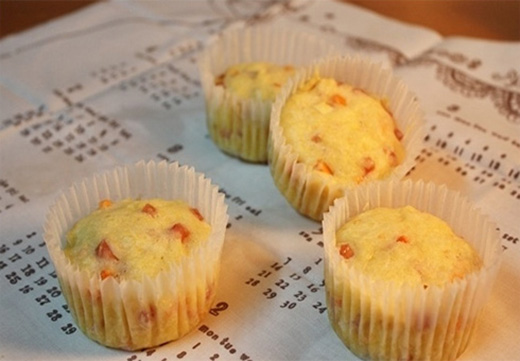

HOME>커뮤니티>쿠쿠 레시피
쿠쿠 레시피
-
- 그린 샐러드 비빔밥
- 일반재료: 식힌 밥 1인분, 샐러드 채소, 아보카도 1/2개, 수란 1개, 닭고기 3조각
양념재료: 고추장 1t, 간장 1t, 레몬즙 1t, 참기름 약간, 볶은 깨 적당량
사용제품: 쿠쿠 밥솥
-
- 쌀을 씻은 뒤, 30분간 불립니다.
- 쿠쿠 밥솥으로 밥을 지은 뒤, 완성이 되면 밥을 꺼내 식혀줍니다.
- 채소는 먹기 좋게 자르고, 아보카도는 한 입 크기로 썹니다.
- 그릇에 고추장, 간장, 레몬즙, 참기름을 넣고 섞어, 레몬 고추장 소스를 만듭니다.
- 그릇에 식힌 밥을 넣고 자른 채소와 아보카도를 넣어줍니다.
- 그 위에 수란과 닭고기를 올려줍니다.
- 입맛에 따라 레몬 고주창 소스를 뿌리고 비벼주면 완성입니다.
-
- 봄부추 전복밥
- 일반재료: 쌀 2컵, 전복 4개, 표고버섯 3개, 은행 10알
참기름 1큰술, 밥물 1+1/2컵
양념재료: 영양부추 1/4줌, 청양고추 1개, 간장 3큰술, 참기름 1큰술
사용제품: 쿠쿠 밥솥
-
- 쌀을 씻은 뒤, 30분간 불립니다.
- 전복을 손질한후 초기잡내 제거를 한 뒤, 내장을 분리합니다.
- 전복살은 칼집을 내주고 내장은 다져줍니다.
- 불린쌀, 내장, 맛술, 참기름을 넣고 볶습니다.
- 쌀이 조금 익으면 물을 넣고 전복살을 올리고 쿠쿠 밥솥에 밥을 짓습니다.
- 밥이 되는 동안 봄부추 양념장을 만듭니다.
- 전복장과 봄부추 양념장을 비벼주면 완성입니다.
-

- 햄채소 머핀
- 일반재료: 계란, 햄, 당근, 양파, 우유, 밀가루, 버터
양념재료: 설탕 5큰술, 소금 1큰술
사용제품: 쿠쿠 밥솥
-
- 실온의 말랑한 버터를 풀어준 뒤, 설탕과 섞어줍니다.
- 다 섞어준 뒤, 실온의 계란을 넣고 함께 섞어줍니다.
- 체애 가루류를 넣고 내린 뒤, 섞어줍니다.
- 다진 햄, 당근, 양파를 넣고 섞다가 우유를 넣고 질기를 맞춰줍니다.
- 머핀틀에 반죽을 담고 쿠쿠 밥솥에 넣어줍니다.
- 만능찜 기능 조리 시간 60분을 선택해 취사를 해줍니다.
- 조리가 완료된 머핀을 식혀주면 완성입니다.
-
- 팥 우유 찜 케이크
- 일반재료: 중력분 100g, 베이킹파우더 1/4t, 우유 100g, 팥배기
양념재료: 설탕 3T, 소금 조금
사용제품: 쿠쿠 밥솥
-
- 가루류를 채에 쳐서 준비해둡니다.
- 우유에 설탕과 소금을 넣고 녹여줍니다.
- 가루류에 우유를 넣고 섞어준 뒤, 팥배기를 넣어 마저 섞어줍니다.
- 용기에 80% 정도를 채우고 팥배기 몇 알은 위에 장식 해줍니다.
- 쿠쿠 밥솥에 넣고 만능찜 기능으로 20분간 쪄주면 완성입니다.
-
- 닭가슴살 레몬조림
- 일반재료: 닭가슴살, 레몬 1개 사과 1/2 개
양념재료: 다진 생강, 간장 3t, 설탕 1t, 맛술 3t, 정종 3t
사용제품: 쿠쿠 압력중탕기
-
- 닭가슴살과 사과, 레몬을 얇게 썰어 준비해둡니다.
- 다진 생강, 간장 3t, 설탕 1t, 맛술 3t, 정종 3t를 넣고 양념장을 만들어줍니다.
- 쿠쿠 압력중탕기에 준비해둔 재료들과 양념장을 넣어줍니다.
- 조리 시간은 1시간, 조리 단계는 4단계, 조리 압력은 저압으로 맞춰줍니다.
- 1시간 경과 후, 먹기 좋은 크기로 잘라 접시에 담아주면 완성입니다.
-
- 밤피자
- 일반재료: 또띠아 1장, 찐밤, 양파 1/2개, 피망 조금
체다슬라이스치즈 1장, 양송이버섯 2개, 피자치즈 한줌
양념재료: 피자 소스
사용제품: 쿠쿠 밥솥
-
- 밤을 쿠쿠 밭솥에 넣고 찜으로 쪄준 뒤, 속을 숟가락으로 파냅니다.
- 밤을 쿠쿠 밭솥에 넣고 찜으로 쪄준 뒤, 속을 숟가락으로 파냅니다.
- 준비 해놓은 재료들을 썰어줍니다.
- 또띠아 위에 피자 소스를 바르고 치즈를 올려줍니다.
- 밤을 깔고 야채를 올려준 뒤, 피자 치즈를 올려줍니다.
- 200도 오븐에서 15분 가량 구워주면 완성입니다.